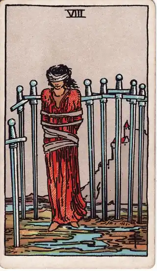
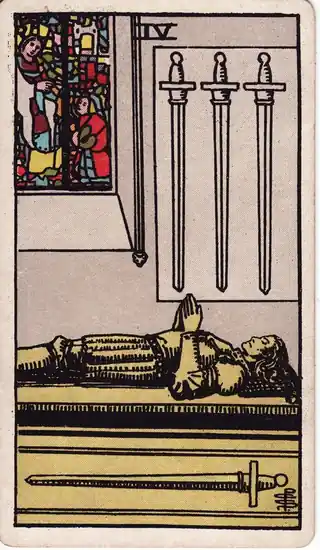

READING
When you're tired from being unable to decide, have the option to "rest" first
(updated ) · DECIDE. editors

There's something you have to decide, but no energy to think is left. You open your phone and close it, think the same thing around in circles, and only the night passes. What you're tired of is not your body, but "yourself, unable to decide."
To say it up front: the goal of this page is not to learn "how to decide well." The goal is not to force out an answer while you're still tired. What today's you needs may not be one more push of effort, but a dividing line for recovery.
In this article, we introduce a way of thinking for stopping once and recovering when you're tired from being unable to decide. The cards are treated not as a way to tell the future, but as a tool for looking at your own state from a different angle.
Being unable to decide is not because your will is weak
When the state of being unable to decide continues, you want to blame yourself: "I'm indecisive," "my will is weak." But in most cases, the cause is not your personality.
- Each option contains something that truly matters
- The more information you gather, the more material for judgment grows, until you can't sort it all out
- In work and life, you repeat small judgments all day and are worn out
It's often said that there is a limit to the quality of judgments a person can make in a day. Precisely in periods when you're carrying a big decision, you use up more energy even on small everyday judgments. Being unable to decide is also the result of having kept thinking seriously. The structure of overthinking itself is also dealt with in How to think when you can't decide and are indecisive.
First, acknowledge the state of being stuck

Two of Swords is drawn as a blindfolded figure crossing two swords in front of their chest, quietly keeping balance. Its keywords are "holding a decision," "balance," and "stalemate."
Borrowing this card's perspective, you can rephrase your current self like this.
Right now, I am keeping my balance in a state where I can't lean either way. That itself is using a considerable amount of strength.
The state of being unable to decide looks like doing nothing, but in fact it's hard labor: continuing to hold both possibilities. Just acknowledging that it's natural to be tired can loosen your shoulders a little.
Notice the assumptions that make you feel "I can't move"

Eight of Swords is the figure of a person bound and surrounded by swords. Its keywords are "restraint," "assumptions," and "a sense of helplessness." However, if you look closely, their feet are free, and there are gaps in the enclosure of swords.
When you're tired from deciding, we tend to be bound by assumptions like the following.
- I have to decide right now
- Once I decide, I can never redo it
- There is only one right answer, and if I miss it, it's over
Is that really so? If you check one by one whether a deadline actually exists, and whether redoing it is really impossible, you may notice that you have more room to choose than you thought.
Resting is not "running away," but preparation for judgment

And here, at the center this time, is Four of Swords. This card is drawn as a figure lying down in a quiet place, resting their body. Its keywords are "rest," "recovery," and "recuperation."
What Four of Swords teaches is that resting itself is one active choice. A conclusion drawn with a tired head tends to be pulled by impatience and anxiety. Once you step away and come back, the same options often look different.
When you decide to rest, making it "with a deadline" like the following reduces the guilt.
- Decide "until this weekend, I won't think about this matter"
- During that time, prioritize putting your body in order: sleep, meals, walks
- For the day you restart, just note down what to think about first
Log the fact that you decided to rest
Once you've decided to "rest," leave that decision itself in a record. "Until when will I not think about it?" "On the restart day, what will I think about first?" When you write it down, the number of times you ruminate in your head during your rest — "I really should be thinking about it" — decreases. The peace of mind that the material for thinking is placed outside you is what makes rest into real rest.
On the restart day, too, records work. What was the self before resting leaning toward, and what did they say they wanted to check? If you start from that memo, you can think not from zero, but from the continuation. A record of decisions is not only for deciding. It can also be used to support the back of your resting self.
After resting, restart small
After resting, you don't need to try to reach a big conclusion all at once. First, try starting from small questions like the following.
- At this point, which way is your feeling leaning, even slightly?
- Picturing yourself having chosen that option, do you feel relieved, or unsettled?
- Before deciding, what is just one more thing you want to check?
It's fine if the answer is "I still don't know." Even just making clear what you don't know moves the decision you're torn over forward.
Finally
Decision fatigue grows the more you carry it only inside your head. Rest first. Then, with your records in hand, think again. The material for blaming your tired self is already more than enough. What's missing is permission for recovery. Please give that permission to yourself today.
Related decision guides
Cards related to this article


More reading
- The types of free tarot readings and how they differ — where the "that feels spot-on" feeling comes from, and how to use them for a decision
- When you're torn over whether to keep going or quit. Standards for letting go of attachment
- Why I, who don't believe in fortune-telling, made tarot into a decision-making tool
- Why the more you ask for advice, the less you can decide, and how to get your own voice back
- When you're torn over whether to keep your current job. How to read a plateau in your career